MOE-INFINITY: Efficient MoE Inference on Personal Machines with SparsityAware Expert Cache——arxiv24
对于现代大模型，参数量巨大导致无法在个人机器上直接跑，且个人机器推理时batch数较少。论文聚焦于此，提出稀疏感知专家缓存。
在批次大小为 1 的情况下，我们发现，即使对于长上下文输入， 消费级 GPU 上可用的内存通常也足以在语言模型 (LLM) 的解码阶段存储最常用的专家，这意味着 在这种情况下为常用专家维护一个缓存可能是有效的。此外，我们观察到，当在单个请求 (即一个 提示) 中连续解码令牌时，专家呈现出不均衡的重用模式。然而，这种重用模式仅出现在请求级别； 在处理多个请求后，不均衡现象消失，所有专家趋于被均匀激活。
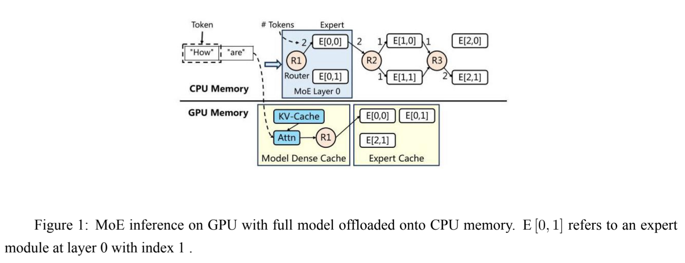
仅仅把专家参数卸载到CPU上，系统会通过计算堆叠，在需要用专家之前将其移动到GPU中的缓存中（这样会不会让算力分散，应该是需要数值分析的）
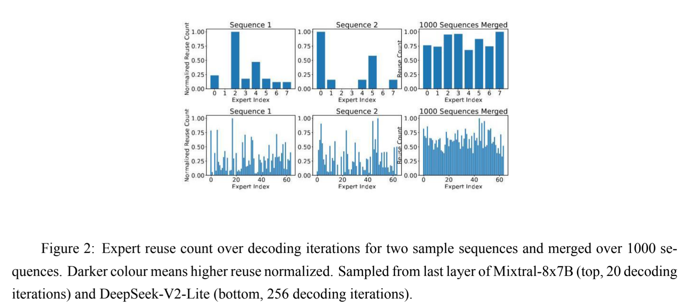
通过实验，发现现有专家模型，不管有多少个专家，其重复使用率都不高，因此可以在GPU中使用一个小缓存，而不会带来I/O堵塞。
之前研究有跟踪专家随时间的激活频率来替换专家，但这没有考虑到moe的稀疏性，对于不同句子，激活专家不一样，让预测较难，同时从长远来看，最终专家激活频率趋于平均，导致无法根据历史激活频率有效预测当前句子使用专家。
但根据实验发现，不同专家对不同领域会有相应的反应，因此可以考虑将其聚合成一个类，下次相似时直接从这里得出预测信息，系统维护两个矩阵，一个是请求级别rEAM，一个是迭代级别iEAM，一次前向传播，iEAM会记录每一层每一个专家的激活次数，然后加到rEAM上，当本次请求结束后，系统会维护一个EAMC，将rEAM聚合在一起（使用kmeans算法），下次推理时，用当前iEAM去与EAMC中的矩阵匹配，注意，iEAM是迭代级别的，意味着每一层都不一样，因此可以预测下一层专家并预取进缓存里
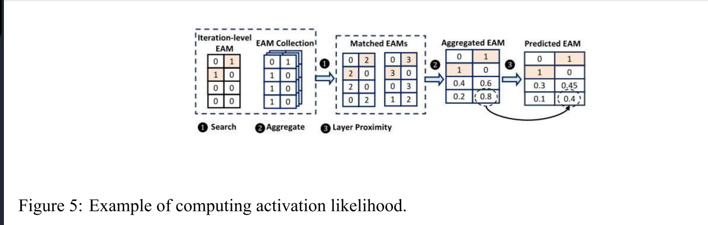
cache如果满了，则会根据当前预测矩阵计算一个最少用的专家，同时越接近顶层，其权重越大，保证顶层越容易被缓存。
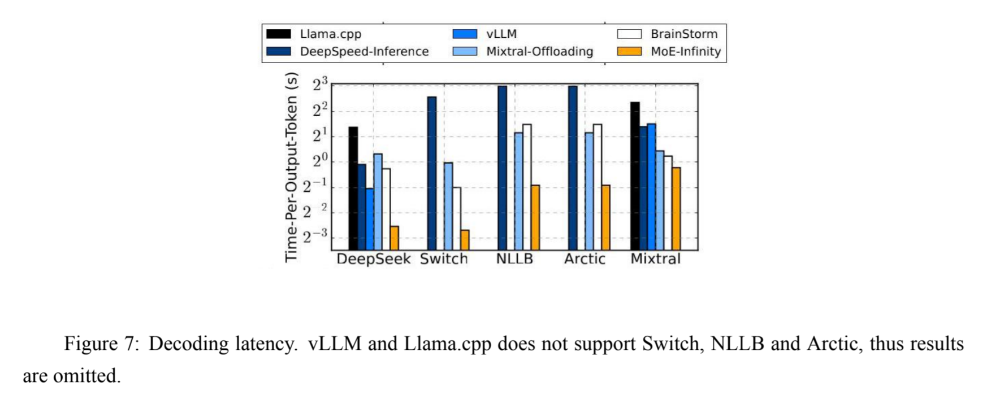
在A5000上跑的结果，显著胜利，即使是专家数最少的mixtral，推理速度也在832ms。附录中有对EAMC满了的情况下的处理
总结：看完论文后，感觉是用的越多（和大模型不谋而合），预测越准，同时因为是在个人机器上，矩阵数量较小，计算与存储压力不大，效果出众，当前尚未拓展到多GPU上。
FloE: On-the-Fly MoE Inference on Memory-constrained GPU——ICML25
边缘设备在传输专家时，因受限制的 PCIe 带宽，传输数十亿参数时用户将会有比较明显的感知，论文提出系统将着力于优化这个延迟。引入用于专家间和专家内稀疏性的双预测器 ，以准确预取激活的压缩权重，同时将 DRAM 使用量降至最低。
例如，Mixtral- 8 × 7 B 模 型中的专家有超过 300MB 的半精度 (FP 16) 参数，通过 16 通道的 PCIe 4.0 总线传输这些参数需要 近 15 ms 的时间，而在英伟达 GeForce RTX 3090 上对单个专家进行计算仅需约 5 ms 的时间。
首先是让专家参数大小变小，论文采用上投影矩阵量化，下投影矩阵和门控矩阵使用上下文激活稀疏化，公式如下
$$
\mathrm{Expert}{\mathrm{SwiGLU}}(x,W,)=\left[\mathrm{Swish}(xW{gate})\odot(xW_{up})\right]W_{down}
$$
量化很好理解，激活稀疏化意思是利用专家内部的稀疏化，减少计算量。
于是就有一个问题——专家内部矩阵是否具有稀疏化的特点呢？
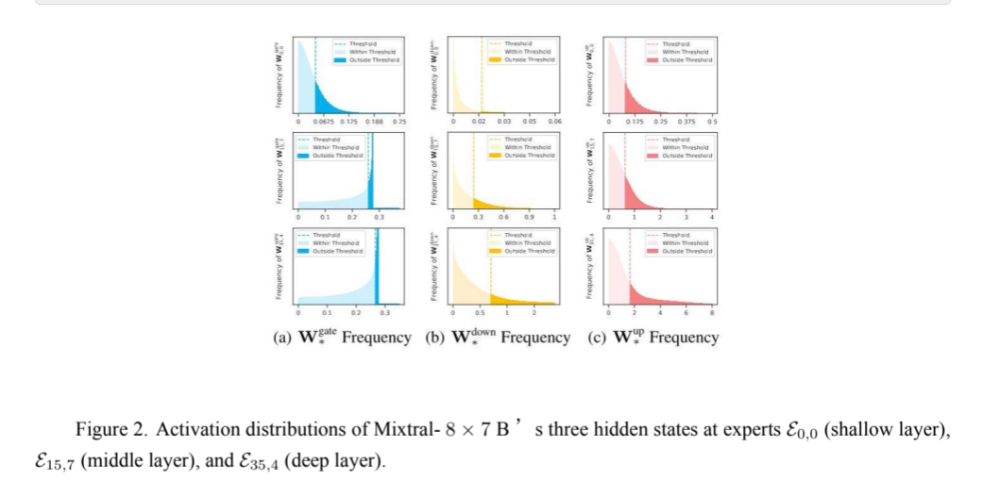
如上图，实验证明是的，矩阵整体值都不高（也可以看出down矩阵的优越性），因此可以设计个阈值，低于阈值的直接置为0，从而减少带宽压力。那么问题又来了，是不是三个矩阵都可以稀疏化呢？论文同样进行了实验，先定义三个损失函数
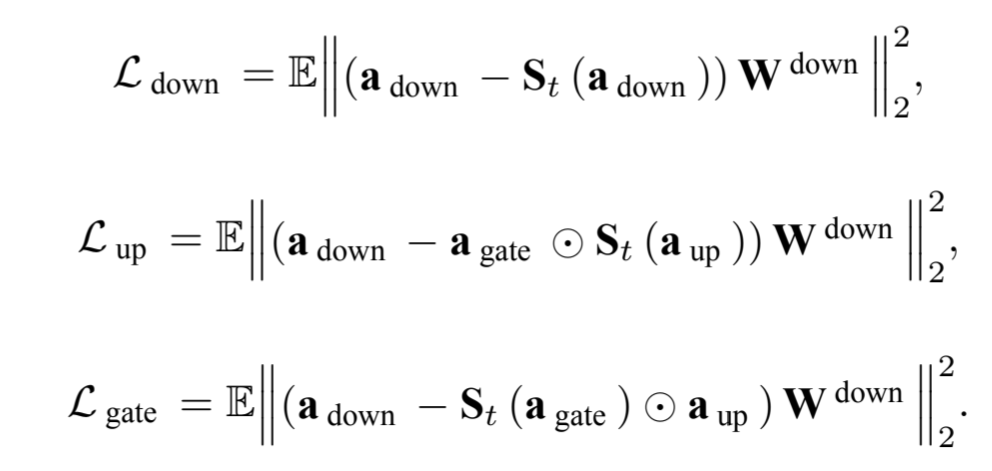
利用这三个损失函数，去研究对哪个矩阵使用稀疏化的影响最大（注意：这里稀疏化指的是利用该矩阵的稀疏化特性，减少另外矩阵的计算量，实现方式为通过设置mask，挑选出激活的通道进行传输），这里的
但还不够完美，up矩阵必须要完全计算，于是论文想要利用低比特宽度，将其量化压缩，从而最大程度提高性能。如下图，还挺巧，刚好up矩阵对量化敏感度最低。并且对于int2之前的比特宽度敏感性差不多，因此采用INT2量化（HQQ）
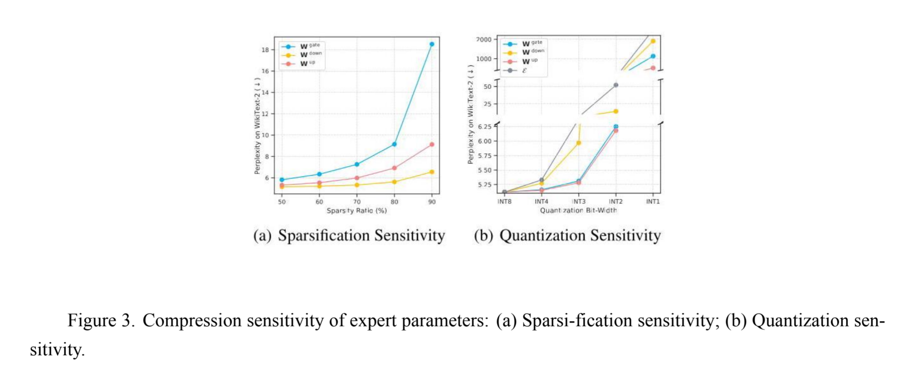
接着，为了平衡计算和传输的重叠度，需要进行专家预测，论文中提出两种预测——专家稀疏性预测与专家间稀疏性预测，其核心在于中间层的隐藏状态极其相似
专家间稀疏性预测器利用两层MLP构建一个小型门控，利用当前层隐藏状态预测下一层将要激活的专家，并在计算当前层时传输这个专家，提高流水线效率；专家内稀疏性，利用当前隐藏状态提前计算好up矩阵及其稀疏性分布，同时内存占用小
同时针对提出的系统，设计更友好的内核——将要传输的down和gate矩阵重组合，多线程异步传输，提高一次传输效率；利用专门的稀疏通用矩阵向量乘法内核提高数据读取效率。
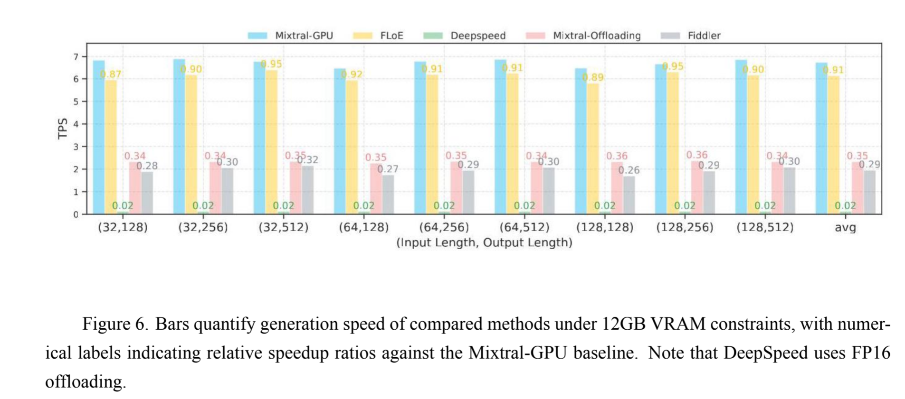
和四个最优基线进行比较：DeepSpeed-MII利用0无限处理专家卸载；Mixtral-Offloading集成了该有的机制；Fiddler最小化传输数据开销；Mixtral-GPU使用HQQ INT2量化，作为延迟下限，从上图可知，对于12GB显存硬件，FloE的生成速率几乎不弱于GPU（0.91），远远超出其它工作
FIDDLER: CPU-GPU ORCHESTRATION FOR FAST INFERENCE OF MIXTURE-OF-EXPERTSMODELS——ICLR25
之前略读过，大概知道是利用CPU进行计算，这次细看。
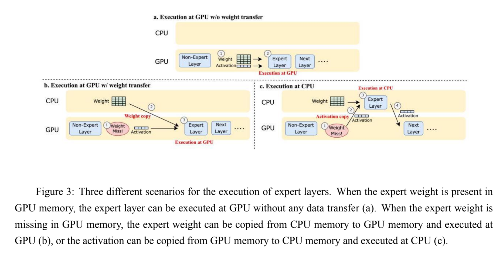
对于专家的计算，无非就三种情况，一是专家在GPU上可以直接算，二是专家不在GPU，从CPU调度进来后计算，三是把激活值调度到CPU上进行计算。方案二处理大规模数据时计算优势可以盖过传输劣势，方案三则相反。论文提出系统主要对两者间的边界进行划分，什么情况下使用二或三。
首先明确每个专家训练后基本已经固化，各自负责部分token，因此通过离线校准数据，评定专家受欢迎程度，然后在系统初始化时，按照这个程度列表，把前列专家送入GPU中。
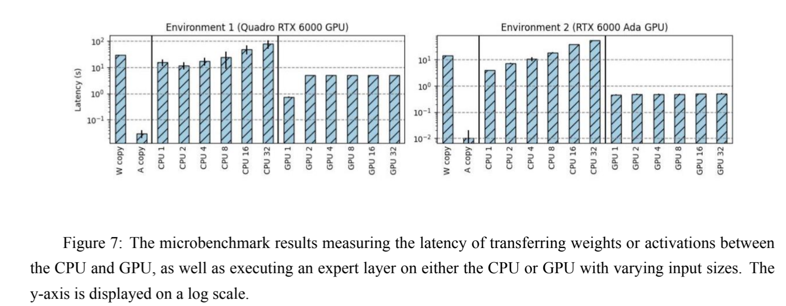
边界划分论文中建模为，GPU上总时间为常数70，CPU上计算时间为输入大小7，再利用枚举，判断每层的每个专家在哪里计算比较好，这里的工程技巧挺好（利用8位数据中的每一位代表一个专家的决策——放在CPU或GPU上，从0遍历到255即可知道所有分配情况）
最后在单批次推理、长预填充文本、束推理三个方面进行了比较。与其他基准测试相比，性能显著更优。
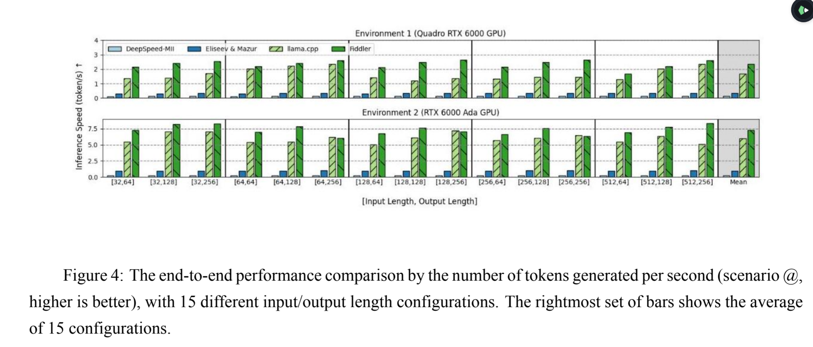
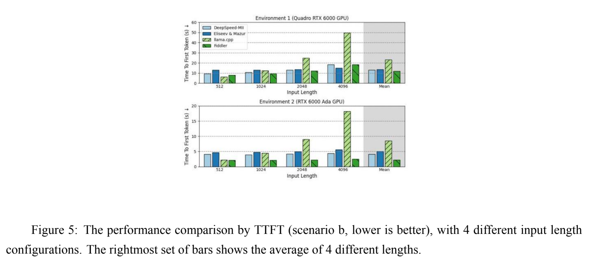
Fast Inference of Mixture-of-Experts Language Models with Offloading——arxiv23
众多论文中比较的基线算法Mixtral Offloading它来了。
该卸载方案是基于两个规律——一些专家在相邻令牌之间被重用；上层隐藏状态蕴含后续层将使用的专家。基于此，构建LRU缓存与专家预测系统。
专家预测提出隐藏状态之间由于残差连接存在相似性，因此可以使用上一层门控函数使用的隐藏状态去让下一层门控使用，如果预测对了就赚了，有点像动态分支预测。
依旧是使用HQQ量化专家，预测中有个小技巧，只有当预测的专家真正用到了才会放进缓存中。主机侧创建一个缓冲区，专门用于存放专家参数，同时设备侧也有临时缓冲区，用于存放预测的专家。
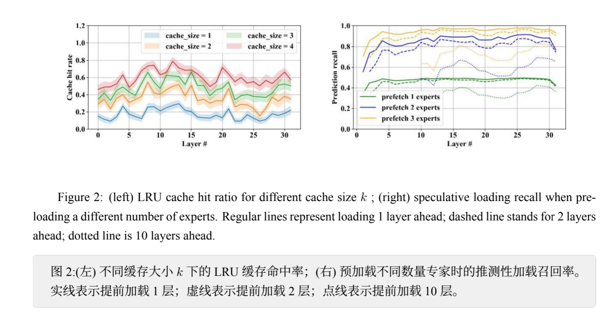
论文中并没有对图片进行展开解释，但通过看图可以看到，缓存大小越大越好，四个专家缓存命中率在0.6左右；同时预取层数不是越多越好，反而是提前加载一层比较合适，并在一层中尽可能取多个专家，原因是因为缓存大小限制，预取十层会造成较大冲突。
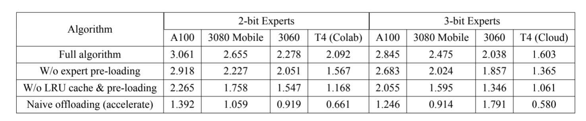
最终结果，使用LRU缓存但不使用预取token生成速率并没有降低多少，但两者都不使用速率降低较多，说明LRU简单好用。同时与朴素卸载方案相比，由于论文构建系统做了些内存相关优化，故生成速率也更高。（注意：论文提到对于高端3080和台式机3060，尽管性能方面有差距，但生成速率相差不多，将其归因于传输带宽限制）
Accelerating Mixture-of-Experts Inference by Hiding Offloading Latency with Speculative Decoding——arxiv25
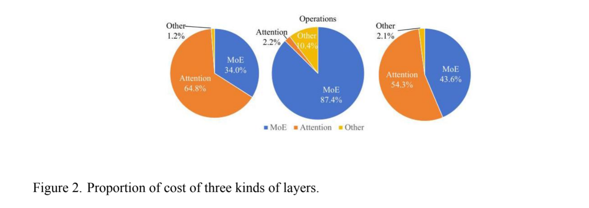
论文发现，在内存消耗及访问成本中，attention和moe占比最大（左图，attention居然这么大，kvcache占比太大了）；计算成本中moe最大，其余可以忽略不记（中图）；综合来看，在推理过程中占据大部分时间的是attention和moe（右图），同时attention是内存瓶颈，moe是计算瓶颈。
传统卸载代表工作为flexGen。现在moe层卸载有利用稀疏性，但这仅仅适用于小批量，从而导致GPU利用率低。因此论文采用增大处理批量来应对专家稀疏性，从而提高GPU利用率。
论文提出系统使用推测性解码技术（细节尚未理解，简单认识为草稿模型生成多个token及后续token，然后发给原模型，利用数学原理验证概率）
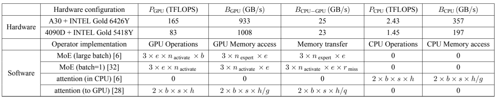
通过分析不同硬件与不同软件上的一些开销，如上表，可以知道，当batch满足一定条件时，大批量有优势；同时注意力层在CPU上计算有优势。进一步分析屋顶图，如下图可以发现moe层受CPU和GPU之间传输带宽限制，实际计算强度离理论值相差较多，而attention的计算则是受CPU内存访问速度限制，通过左右两图对比可以看出，提高硬件性能对moe层的计算提高并不大，因此需要解决传输问题，论文所给出答案是提高批量
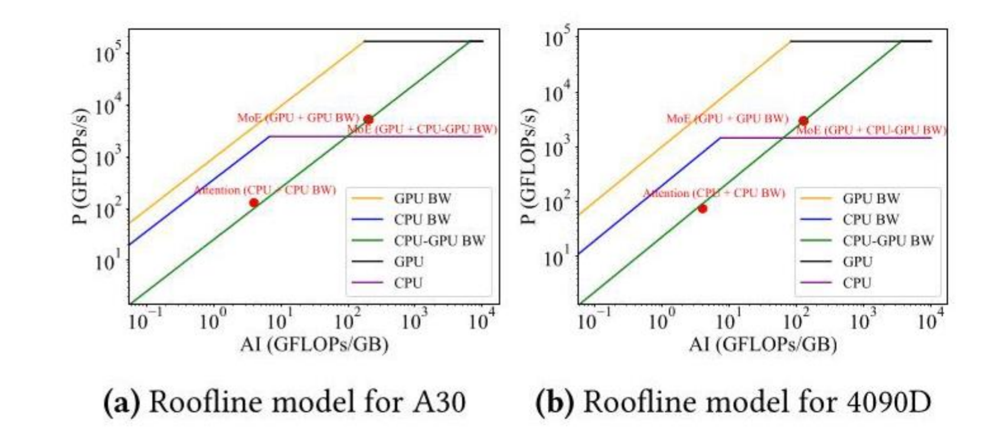
系统整体架构涉及到transformer部分的优化，尤其是推测性解码部分有些难，moe部分与MoE-Lighting类似，但本文系统考虑了更多计算-传输堆叠，优先看ML
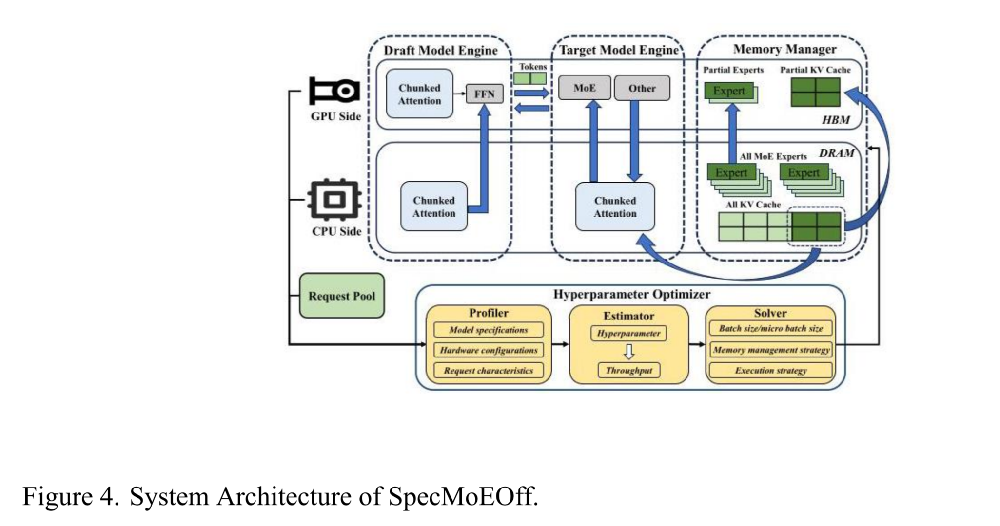
MoE-Lightning: High-Throughput MoE Inference on Memory-constrained GPUs——SIGPLAN25
是一篇很好的入门论文，对于moe以及推理原理大致讲了一遍，同时还梳理了屋顶模型原理，并拓展屋顶模型，在异构系统中分析。
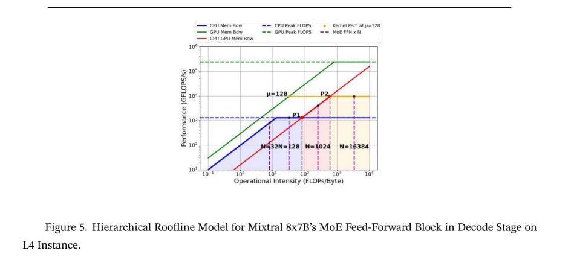
上图三个颜色区域为随着计算强度增大，从CPU计算有益到混合计算有益到理论上限，因此可以控制的参数为N与
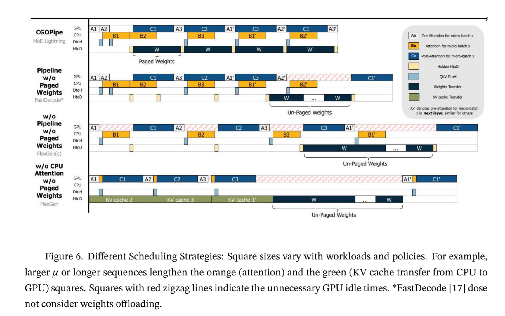
涉及到KV缓存，整个系统不太清楚，同时有个疑惑，这里专家的路由是放在CPU上计算了吗，从而知道下一层使用的专家，进而分页传输。